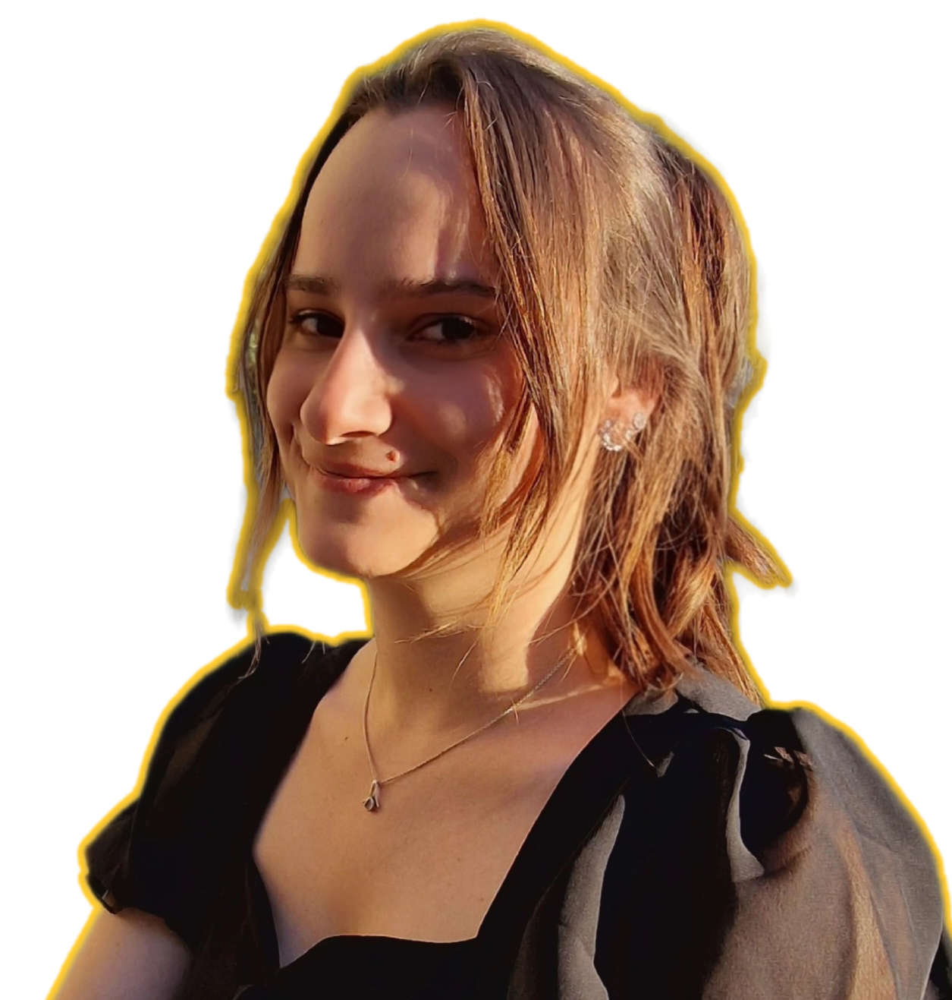

Grâce à mes expériences, j’ai développé des compétences variées, tant humaines qu’informatiques, qui me permettent de mieux m’adapter à de nouvelles situations.
Je maîtrise l’installation et la configuration de machines virtuelles, notamment avec les outils VMWare et VirtualBox, ce qui me permet de créer des environnements de travail flexibles et sécurisés. J’utilise régulièrement les commandes Linux de base pour assurer la gestion et l’administration des systèmes. J’ai acquis des connaissances solides sur les protocoles TCP/IP et je sais utiliser Wireshark pour analyser le trafic réseau et détecter d’éventuelles anomalies. Par ailleurs, je gère efficacement les comptes utilisateurs sous environnements Windows et Linux, garantissant ainsi la sécurité et l’organisation des accès au sein des systèmes informatiques.
Je fais preuve d’un esprit analytique développé, accompagné d’une grande rigueur et d’un sens du détail qui me permettent d’aborder chaque situation avec précision et méthode. Ma curiosité intellectuelle constante me pousse à apprendre sans cesse et à m’adapter rapidement aux nouveautés. Je possède également une forte capacité d’écoute et une empathie naturelle, ce qui facilite la compréhension des besoins des autres et favorise une collaboration harmonieuse. Enfin, ma persévérance me permet de surmonter les obstacles et de mener mes projets à leur terme avec détermination.